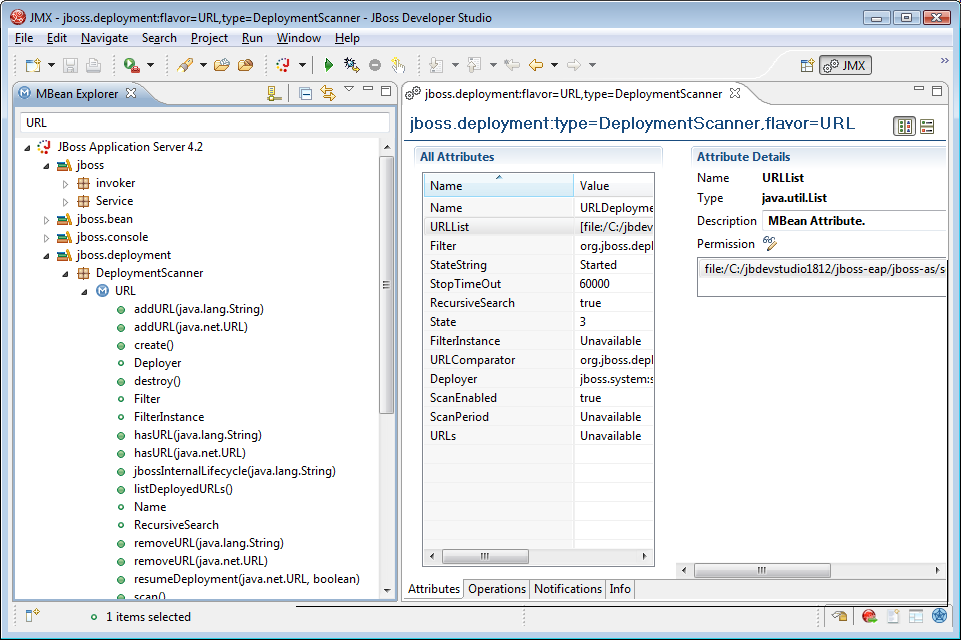

< Main Index JBoss ESB Tools >
General |
|
|
Eclipse JMX moves to JBoss Tools |
Jeff Mesnil contributed his Eclipse-JMX plugin to JBoss Tools, now called JMX Tools. JMX Tools allows you to setup multiple JMX connections and provides view for exploring the JMX tree and execute operations directly from Eclipse. The JMX Tools replaces the JMX node we previously had in the JBoss Server View. |
|
|
|
|
JMX Perspective |
The JMX perspective is the simplest way to use the MBean explorer. It allows you to explore the MBean tree on any JMX based system (not just JBoss AS); double click an operation or attribute and a MBean editor shows up with info about the related MBean.  |